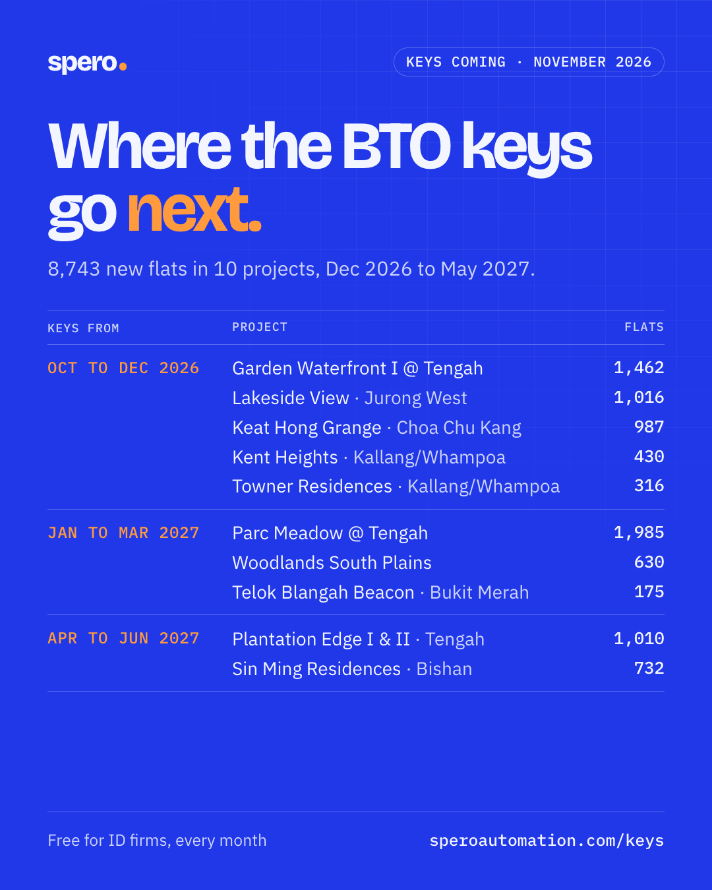

Work that runs itself.
Spero sets up AI automations for the routine work in your business: answering leads, handling documents, following up, reporting. You get the time back.
- Saves time
- Serve more clients
- Serve clients better
- Business grows
5 ways your firm can use ChatGPT this week.
A free guide for interior design firms. Each one is a prompt you copy, fill in with your own details and send. Free ChatGPT, no coding.
- 01Turn a messy enquiry into a clean lead summaryName, property, keys, budget, and the three questions to ask next.
- 02Follow up a homeowner who went quietThree friendly WhatsApp nudges, none of them pushy.
- 03Turn site-visit notes into a recap and a to-do listTalk it out after the visit. Get the client's recap and your team's list.
- 04Explain a quotation in plain English, and in ChineseSo first-time renovators, and their parents, know what they're paying for.
- 05Write WhatsApp replies for the questions you get every dayThen save them as quick replies and answer in two taps.
By Timothy, who builds AI systems for a living.
Get the guide.
Read it on your phone or print it. Every prompt is ready to copy.
It's yours.
Download it now, or read it online.
What slow replies cost your firm.
On Qanvast, one homeowner's enquiry can go to up to five firms, and the first to reply usually gets the consultation. Put in your own numbers. A guess is fine, and nothing leaves this page.
From Qanvast, your website, Instagram, WhatsApp and referrals together.
No reply within the hour, or no follow-up after the first message.
Out of every 100 enquiries, how many become signed projects.
A typical renovation job for your firm.
Projects you could be losing to slow replies
S$72,000a month
12 cold enquiries × 15% close rate = 1.8 projects at S$40,000 each
- Over a year
- S$864,000
- Win back half of them
- S$36,000 a month
A rough guide. It assumes an enquiry that goes cold would have closed at your usual rate.
Find out your real reply time.
The calculator runs on a guess. A free reply-speed test shows what really happens when a homeowner writes to your firm.
- Within 7 days we send your firm one realistic enquiry, at a time you don't know.
- You get the exact time to the first reply and what it said, with screenshots.
- No cost, nothing to sign.
Where the BTO keys go next.
A free calendar for interior design firms, every month. Which HDB BTO projects get their keys in the next six months, and how many flats, so you know where to market and when.
- 01Month by month, project by projectTown, number of flats, and the mix of 3-, 4- and 5-room.
- 02Where to market this monthThe estates whose owners are choosing a designer right now.
- 03Straight from HDB's own datesEvery project links to its source. No sales pitch inside.

This month's calendar.
Read it here, get the PDF, or send it on. No sign-up.
What we can automate for you.
Each one is set up around the tools you already use and switched on one at a time.
-
Instant lead response
Every new enquiry gets a reply in seconds.
- New enquiry
- Instant reply
- Call booked
-
Document processing
Invoices and forms read, checked and filed for you.
- Document arrives
- Details extracted
- Saved to your system
-
Follow-up sequences
Timed reminders, so no quote or call goes cold.
- Quote sent
- Reminders on a schedule
- Reply or close
-
Past customer outreach
Personal messages that restart old conversations.
- Old contact list
- Personal outreach
- New conversations
-
Internal reporting
Your weekly numbers, sent to you as one summary.
- Data from your tools
- Weekly summary
- In your inbox
How it works.
-
01
Discovery
We learn how your business runs today: where enquiries come from, which tools you use and where the hours go.
-
02
Build
We set the automation up around your tools and test it on real cases.
-
03
Run
We switch it on, watch it, and adjust it as your business changes.
Tell us what you'd like off your plate.
Send a few lines about the work that eats your time. We'll reply with what we would automate first.
- Phone
- +65 8337 4686